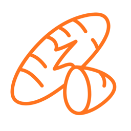

Wearable data collection for research teams
YAMS Mobile is a research instrument built by the SenSE Lab at The Ohio State University. It connects to MotionSenSE Bluetooth wristbands and records the timing signal each wristband sends while it is recording, so a wristband’s data can be lined up in time with the rest of a study’s data afterwards.
Session files are written to the phone and collected by research staff. The app has no accounts, makes no network connections, and sends nothing off the device.
Without the wristband hardware, the app can still be explored end to end: open the ☰ menu and turn on Simulated device.